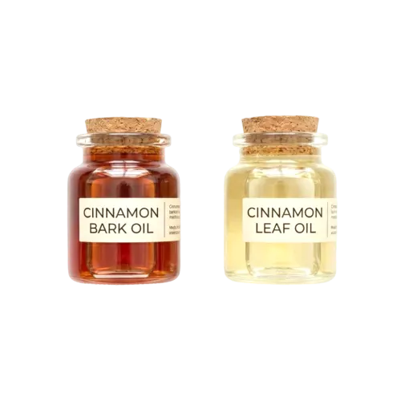

We are certified Ceylon Cinnamon Oil suppliers from Sri Lanka, exporting premium true cinnamon essential oil with high cinnamaldehyde content to the EU, USA, and 40+ countries worldwide — serving aromatherapy, wellness, and cosmetic industries.
Ceylon Cinnamon Oil (Cinnamomum verum) is the True Cinnamon essential oil steam distilled from premium GI-certified quills and bark. Distinguished by its high cinnamaldehyde content, warm spicy aroma, and therapeutic properties — making it the most premium cinnamon essential oil variety in the world.
GI Certified · Therapeutic Grade
Bark Oil · Leaf Oil
Bark: 60-75% · Leaf: 70-85%
Aromatherapy · Pharmaceutical · Cosmetic · Nutraceutical

Distilled from the inner bark with higher cinnamaldehyde content (60-75%). More potent, expensive, and ideal for aromatherapy and therapeutic applications.
Distilled from leaves with 70-85% cinnamaldehyde and higher eugenol content. More suitable for topical applications and cost-effective formulations.
Made from GI-certified Ceylon Cinnamon quills and bark ensuring authentic origin and protecting the brand.
Our Ceylon Cinnamon Oil has high cinnamaldehyde content ensuring potent therapeutic properties and rich aroma.
Steam distilled to preserve the natural therapeutic properties without chemical solvents or additives.
Complete traceability from farm to pack with GI certification ensuring authentic Sri Lankan origin.
Our Ceylon Cinnamon Oil is made from GI-certified quills and complies with EU and USA essential oil regulations. We provide complete certification documentation with every shipment.
GI Certified
Organic
Vegan
Non-GMO
| Botanical Name | Cinnamomum verum |
| Types | Bark Oil · Leaf Oil |
| Cinnamaldehyde (Bark) | 60 – 75% |
| Cinnamaldehyde (Leaf) | 70 – 85% |
| Extraction Method | Steam Distillation |
| Packaging | 10ml · 50ml · 100ml · Bulk Drums |